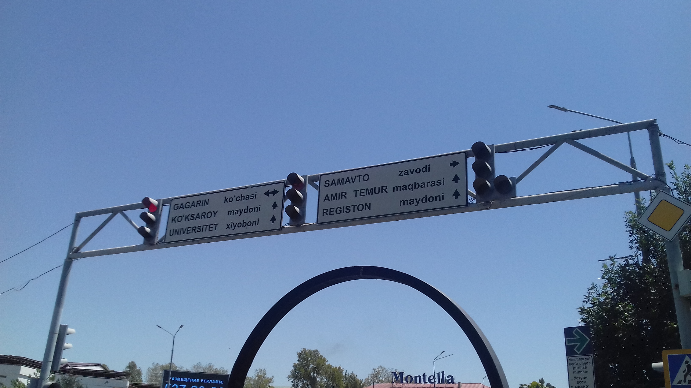

Lotin yozuviga o'tish: 1993-yilgi alifbo islohoti va uning bosqichlari
Mustaqillikdan so'ng O'zbekiston 1993-yil 2-sentabrda lotin yozuviga asoslangan o'zbek alifbosini joriy etish to'g'risidagi qonunni qabul qildi. Bu tarixiy ma'lumotnomada arab, lotin va kirill yozuvlarining almashinuvi, 1993-yilgi qonun, 1995-yilgi tahrir hamda o'ttiz yilga cho'zilgan o'tish jarayoni manbalar asosida, aniq sana va faktlar bilan bayon etiladi.

Mustaqillikka erishgach, O'zbekiston kirill yozuvidan lotin yozuviga qaytish yo'lini tanladi. Quyida o'zbek alifbosi tarixi va 1993-yilgi islohot — uning tarixiy zamini, qonuniy bosqichlari va amaliyotga joriy etilishi — faqat manbalarga asoslangan faktlar, aniq sana va tafsilotlar bilan bayon etiladi.
Tarixiy zamin: arab, lotin, kirill
O'zbek tili 1929-yilgacha asosan arab yozuvida yozilgan. 1929-yilda Samarqandda o'tkazilgan imlo konferensiyasida lotin yozuviga asoslangan alifbo (dastlab 34 harfli) qabul qilindi va u 1929–1940-yillarda amalda bo'ldi; 1934-yilgi islohot alifboni soddalashtirdi. 1940-yilda Stalin davrida o'zbek tili kirill yozuviga o'tkazildi va bu yozuv sovet davrining oxirigacha saqlanib qoldi.
1993-yil 2-sentabr: lotin yozuvi qaytarildi
1993-yil 2-sentabrda O'zbekiston «Lotin yozuviga asoslangan o'zbek alifbosini joriy etish to'g'risida»gi qonunni qabul qildi. Qonunda bu qaror 1929–1940-yillardagi ijobiy tajribaga va jamoatchilik vakillari bildirgan istaklarga asoslanganligi ta'kidlandi. Dastlabki alifboda Ç, Ş, Ö, Ğ kabi diakritik (ustki belgili) harflar bor edi; to'liq o'tish 2010-yil sentabrigacha amalga oshirilishi rejalashtirilgan edi.

1995-yilgi tahrir
1993-yilgi alifbo 1995-yilning may oyida qayta ko'rib chiqildi va 1995-yil 24-avgustda Vazirlar Mahkamasining 339-sonli qarori bilan «O'zbek tilining asosiy imlo qoidalari» tasdiqlandi. Tahrirda diakritik harflar o'rniga qo'sh harflar (Sh, Ch) va tutuq belgili harflar (O', G') kiritildi. Shu tariqa alifbo 26 ta asosiy lotin harfi hamda Sh, Ch, Ng birikmalari va O', G' harflari va tutuq belgisidan iborat bo'ldi; bu me'yor qariyb o'ttiz yil amal qildi.
Amaliyotga joriy etish
1996-yildan boshlab barcha ta'lim muassasalarida o'quv jarayoni to'liq lotin yozuvida olib borila boshladi, darsliklar lotin alifbosida chop etildi. Biroq to'liq o'tish muddati bir necha bor kechiktirildi (avval 2005, keyin 2010-yil), kirill yozuvi esa matbuot va rasmiy foydalanishda keng saqlanib qoldi. 2021-yil fevralida hukumat hujjat yuritishni 2023-yil 1-yanvargacha to'liq lotin yozuviga o'tkazish rejasini e'lon qildi.
Yangi tahrir sari (2019–2026)
2019–2021-yillarda alifboning yangi tahririga oid loyihalar taklif qilindi. 2026-yil 10-sentabrda O'zbekiston Oliy Majlisi Senati alifboni yangilashga doir qonunni ma'qulladi: unda O' → Ö, G' → Ğ, Sh → Ş, Ch → Ç tarzida o'zgartirish nazarda tutilib, alifbo 28 harf va bitta tutuq belgisidan iborat bo'ladi. Qonunga ko'ra, birinchi sinf darsliklari 2027-yildan yangi tahrirda chop etiladi, to'liq o'tish esa 2031-yilgacha rejalashtirilgan.
Xulosa
1993-yilgi islohotdan buyon o'zbek yozuvining lotinlashtirilishi o'ttiz yildan ortiq davom etayotgan jarayondir. Bugungi kunda O'zbekistonda lotin va kirill yozuvlari yonma-yon ishlatilib kelinmoqda — bu holat chet eldagi o'zbek diasporasi uchun ham ikkala yozuvni bilishni taqozo etadi.